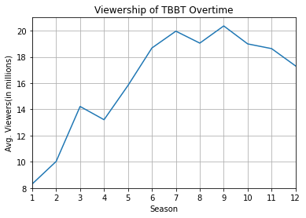
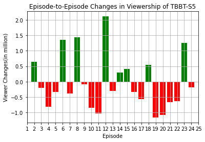

The Big Bang Theory is an American television sitcom created by Chuck Lorre and Bill Prady, both of whom served as executive producers and head writers on the series, along with Steven Molaro. It aired on CBS from September 24, 2007, to May 16, 2019, running for 12 seasons and 279 episodes.
It is a popular American sitcom that centers around a group of socially awkward scientists, including physicists Sheldon Cooper and Leonard Hofstadter, and their interactions with each other and the non-scientific world. The show blends intellectual humor with relatable life situations, making it a comedic exploration of geek culture and interpersonal relationships.
Photo of the Logo of the Show
The Big Bang Theory Series’ logo
Summary of Basic Statistics
“The Big Bang Theory” experienced a modest start, ranking 68th in its first season and climbing to 40th by its second. By the third season, it emerged as CBS’s highest-rated show, peaking at 12.83 million viewers, and it ascended to become television’s top-rated comedy in its fourth season. In the sixth season, the episode “The Bakersfield Expedition” set a new high with 20 million viewers. Throughout the 2012-13 season, the show led syndication ratings, surpassing long-time leaders like “Judge Judy” and “Wheel of Fortune,” though it was overtaken by “Judge Judy” again in the 2013-14 season.
Season
Avg. viewers
1
8.31
2
10.03
3
14.22
4
13.21
5
15.82
6
18.68
7
19.96
8
19.05
9
20.36
10
18.99
11
18.63
12
17.31
Graph of Viewership Over Time
Code
```{python}#| label: fig-viewer#| fig-cap: "Viewership of TBBT Overtime"import pandasimport matplotlib.pyplot as pltsv = pandas.read_csv("TBBT viewer(season).csv")plt.plot(sv['Season'], sv['Avg. viewers(in millions)'])plt.title('Viewership of TBBT Overtime')plt.xlabel('Season')plt.ylabel('Avg. Viewers(in millions)')plt.xlim(1, 12)plt.xticks(range(1, 13))plt.ylim(8,21)plt.grid(True)plt.show()```

Figure 1: Viewership of TBBT Overtime
Graph of Episode-to-Episode Changes in Viewership
Code
```{python}#| label: fig-viewerchange#| fig-cap: "Episode-to-Episode Changes in Viewership of TBBT-S5"import pandasimport matplotlib.pyplot as pltev = pandas.read_csv("TBBT S5 viewer(episode).csv")ev['change']=ev['Viewers(in millions)'].diff()colors = ['red' if change < 0 else 'green' for change in ev['change']]plt.bar(ev['Episode'], ev['change'], color=colors)plt.title('Episode-to-Episode Changes in Viewership of TBBT-S5')plt.xlabel('Episode')plt.ylabel('Viewer Changes(in million)')plt.xlim(2, 24)plt.xticks(range(1, 26))plt.grid(True)plt.show()```

Figure 2: Episode-to-Episode Changes in Viewership of TBBT-S5
Short Description of Observed Changes
The bar chart presents viewership numbers for a TV show across 24 episodes. Viewership fluctuates moderately within the range of 14 to 16 million, maintaining a generally stable pattern with slight variations. Notably, the viewership peaks at episodes 12 and 18, with 16.13 and 16.2 million viewers respectively. Towards the end of the season, starting from episode 20, there is a noticeable decline, with episode 22 dropping to the lowest point at 12.65 million. Overall, despite these fluctuations, the series sustains high viewership throughout the season.